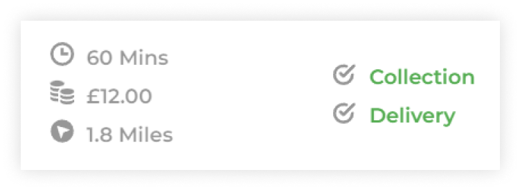
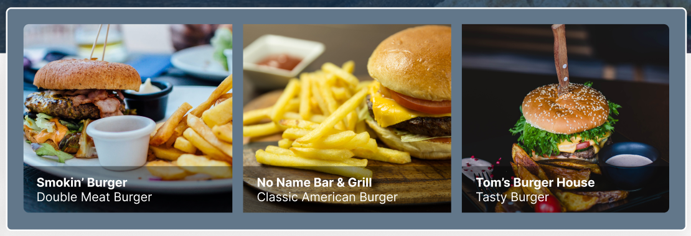

Summary
Colchester Eats is a local-based competitor to apps such as Just Eat, Deliveroo or Uber Eats with the mantra of #SupportLocal. You can order takeaway for delivery or collection from restaurants in and around Colchester. Through this case study, my aim was to improve user experience to both decrease page abandonment before ordering, and increase special offer uptake.
Colchester Eats is a local-based competitor to apps such as Just Eat, Deliveroo or Uber Eats with the mantra of #SupportLocal. You can order takeaway for delivery or collection from restaurants in and around Colchester. Through this case study, my aim was to improve user experience to both decrease page abandonment before ordering, and increase special offer uptake.
|
TEAM STRUCTURE
I worked on both the UX research and UI structure as the UX/UI designer during this project - This was an unsolicited project created as a case study as a part of the School of UX course. |
MY RESPONSIBILITIES
Through UX research and UI changes I aimed to improve the user experience of choosing a takeaway to order from, minimising user frustrations so that they reach the order page. |
Business Research
This stage involved deeper research into the company itself, its values, and priorities. I’ve used the Lean Canvas method to help us quickly define the current problems, business goals, value propositions and metrics - please see next page for the full document. Establishing these things early helped us to create more tailored user tests based directly on user pain points or theorised issues.
This stage involved deeper research into the company itself, its values, and priorities. I’ve used the Lean Canvas method to help us quickly define the current problems, business goals, value propositions and metrics - please see next page for the full document. Establishing these things early helped us to create more tailored user tests based directly on user pain points or theorised issues.
|
BUSINESS GOAL
Improve customer conversion rates and customer uptake of special offers. |
PROBLEM DEFINITION
There is a lot of customer dropoff before reaching the order page, in which customers will often go to a competitor app. (Justeat, Deliveroo etc) |

|
WHAT WORKS
|
WHAT COULD BE IMPROVED
|
|
Average user profile
— Lives in or around Colchester, Essex
— Average customer age range: 25-40 — Buying local is important to them — Appreciates a bargain I arranged calls via zoom from both Colchester residents and users of food delivery websites / apps. I both listened to their initial thoughts on the website/app, and asked them questions to direct them to specific parts of the process that my hypotheses are centered around.
|
KEY USER TEST FINDINGS
80%
of users mentioned that they wanted to be able to see what sort of food they could purchase
100%
incorrectly identified app exclusivity as an offer due to the icon being the same
60%
of users commented on the ease of finding the category of food they would like
80%
of users correctly identified which restaurants were open and which were closed
|
COLLATING APP & WEBSITE REVIEWS
I went through public reviews on the google store, apple store and reviews for the website itself to see customer thoughts, which confirmed several of my positive hypotheses: That the platform branding is seen as secondary, and that the company's mantra of supporting local businesses is clear and reflected in the website itself.
I went through public reviews on the google store, apple store and reviews for the website itself to see customer thoughts, which confirmed several of my positive hypotheses: That the platform branding is seen as secondary, and that the company's mantra of supporting local businesses is clear and reflected in the website itself.


User Journey
Understanding the journey a user takes to select their takeaway is important to look at to see where things can be improved. While the web and mobile app journeys differ slightly, they both still have the same UX problems/wins that are identified in my hypotheses. I focused in on the journey to find a takeaway that serves burgers specifically because this was the scenario used in my user testing, and also as searching for any other takeaway type works in the same way.
{kind=link}
{kind=link}
|
Information Architecture
THE MISSING LINK: DELIVERY COST During my user testing it was identified by 2/5 users that though they could see the minimum spend on the main browsing page, they could not see the delivery cost - I have identified this as very important to users and this will be implemented in the new version. 
THE CLOSED STATE IS OBVIOUS... BECAUSE THE OPEN STATE IS MORE OBVIOUS!
Even though the closed state isn’t visually easy to see at a glance, the open state of a takeaway is, and open takeaways are always pushed to the top of the screen. As there are only 2 states, users can easily assume a takeaway is closed if they can’t see the bright green ‘open’ widget. This is proven with my collected data, wherein 80% of tested users correctly identified which restaurants were open and which were closed. If Colchester Eats chooses to take food preorders in the future, this may need to be relooked at, but there are currently no plans to do so. 
THE FOOD CAROUSEL
To better display the array of food available related to the category the user has selected, I designed a food carousel for the top of the takeaway selection screen. As meals already have specific tags in their respective menus (Burgers, Breakfast, BBQ etc.) the intention is for the carousel to use these tags to display a random selection of relevant food to the user. In the future this could also be used to facilitate paid promotions. |
Accessibility
WCAG VALIDATION
I aim to have the website follow the Web Content Accessibility Guidelines.
VISUAL ACCESSIBILITY
The design was tested using visual impairment simulation tools - the design is suitable for colour blind users (both protanopia and full colour blindness), users with light sensitivity, and users with minor vision acuity.
WCAG VALIDATION
I aim to have the website follow the Web Content Accessibility Guidelines.
- Legible text sizes and large buttons
- Minimum AA Standard colour contrast ratios
- System is accessible on different screen sizes
- System is responsive & doesn't take long to load
VISUAL ACCESSIBILITY
The design was tested using visual impairment simulation tools - the design is suitable for colour blind users (both protanopia and full colour blindness), users with light sensitivity, and users with minor vision acuity.
{kind=link}
{kind=link}
|
Usability Testing
SCENARIO WALKTHROUGH I set up the following scenario for users, and gave them a prototype to click-test: "Imagine you are looking to get some burgers delivered on a Friday night - Please click where you think you should to view the restaurant you're most interested in." While user food preferences factored into this test, the test was more to see the things on screen that a user deems need to be clickable. From my tests I can see that the entire restaurant entry needs to be interactable (including an order now button which I previously thought was redundant) and users also expect food images to be clickable. |
{kind=link}
|
QUESTION TEST Using Lyssna, I fielded answers to a A/B test of the old design vs my proposed new design. 92%
of users chose the new design when asked which one made them want to order a takeaway more
According to Lyssna.com, taking into account my sample size, this means that this result is 99% likely to be statistically significant and not due to random chance.
|
Additional comments confirmed my hypotheses further, and that this design will successfully solve the business problem outlined in the initial brief.
“The pictures are big and clear which makes the navigation easier, you get better idea of the food the restaurant is offering which makes the whole experience more engaging”
“Bigger images of food makes this more appealing, as you can see clearer what to expect”
“Good photo visuals and better views of offers”
|
|
WORD CLOUD This word cloud was generated from the comments I received during my usability tests - from this we can see that words such as ‘pictures’, ‘visuals’ and ‘food’ feature heavily, which shows some of the user priorities when leaving feedback. ‘Information’ and relaying it clearly is also important according to user feedback. |
{kind=link}
Prototype Components
Component states used in the final prototype, including default, hover and selected states.
Component states used in the final prototype, including default, hover and selected states.
Final Prototype Screens
INTRO SPLASH SCREEN
The screen was slightly modified to make it consistent with all other branding.
INTRO SPLASH SCREEN
The screen was slightly modified to make it consistent with all other branding.
MAIN TAKEAWAY SELECTION SCREEN
Screen Upgrades:
Screen Upgrades:
- a randomised food carousel (based on food that is tagged the same as the selected category)
- More easily distinguishable offers and app exclusivity
- Hero imagery for takeaways
- Delivery prices clearly displayed
|
MOBILE VERSION While the main focus of this case study was the desktop web version, I also did some work on mocking up a similar mobile version to show what the site would look like with less screen real estate. |
{kind=link}
|
GOOGLE ANALYTICS
Once the changes have been implemented, we can set up google analytics to track order conversions (as per the original business problem) and track which takeaways are getting more traffic (and whether this lines up with the use of offers or good food imagery) |
SESSION REPLAY & HEATMAPS
Using Hotjar, I will be able to track where users are clicking on the screen (including pain points represented as rage clicks) this may help us to make further changes to the website/app in the future. I can also see the journey users take across the whole website via session replay. |